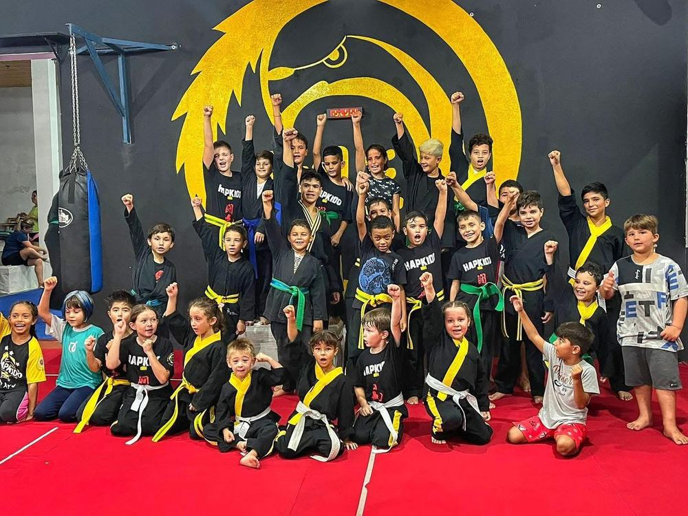
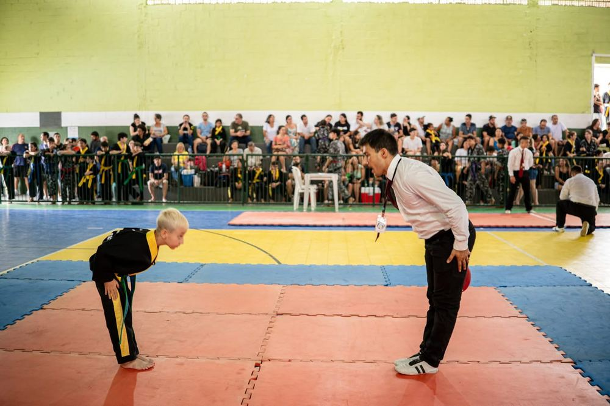
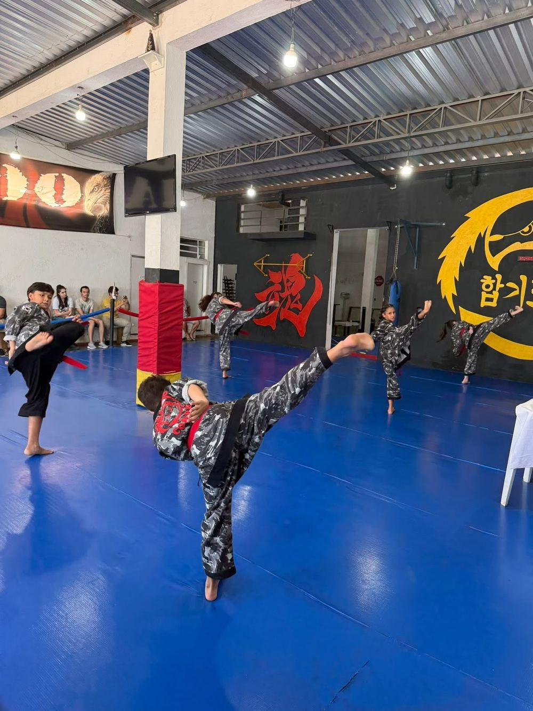
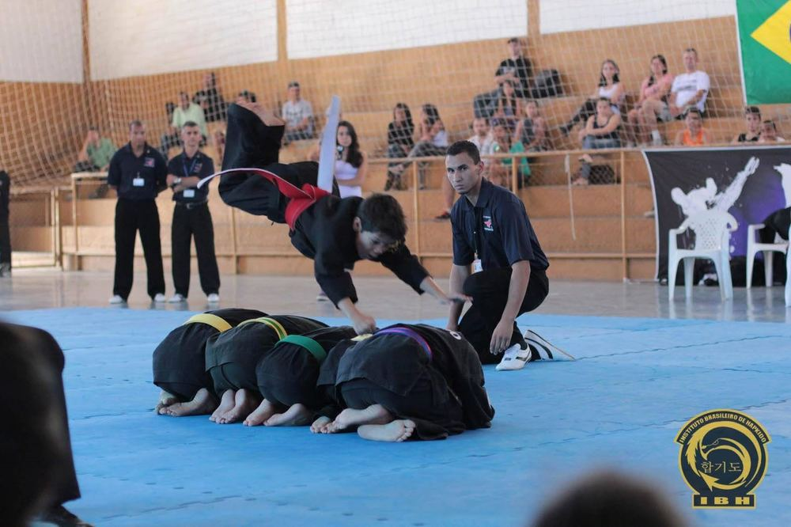
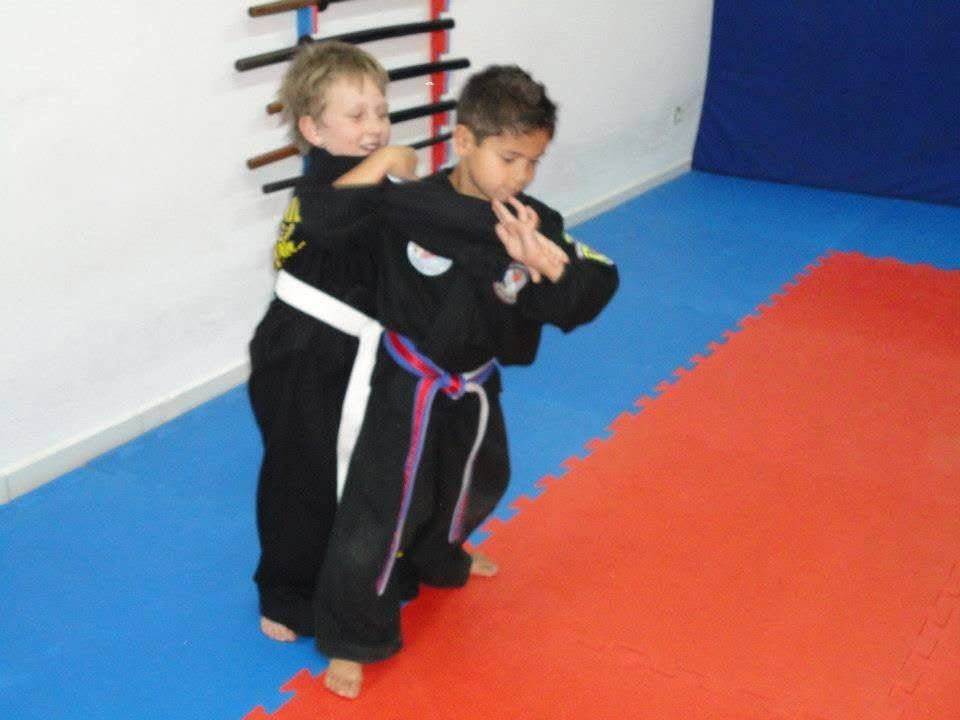
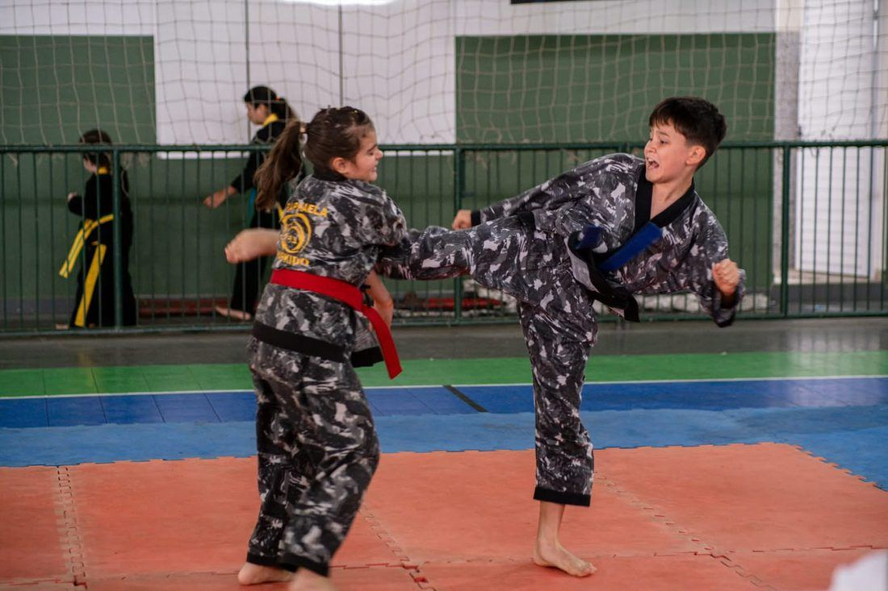
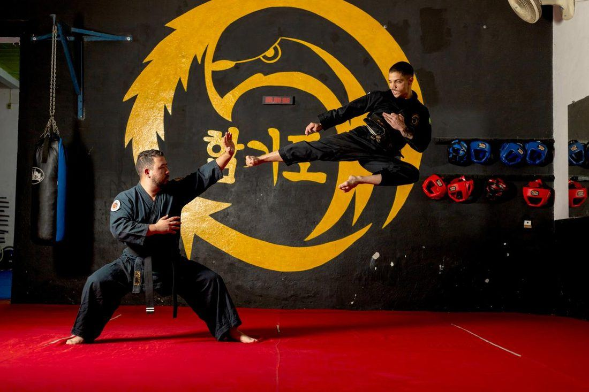
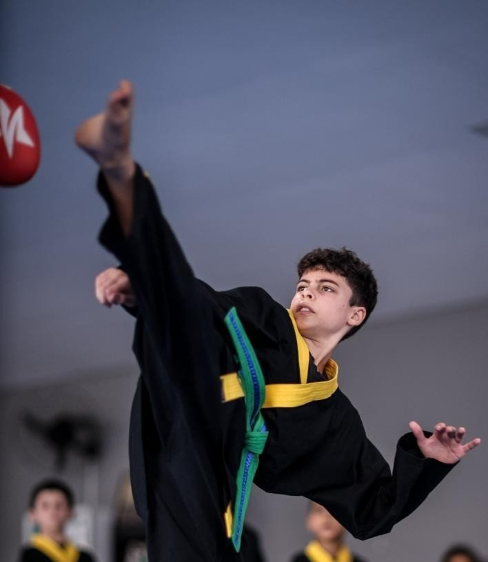
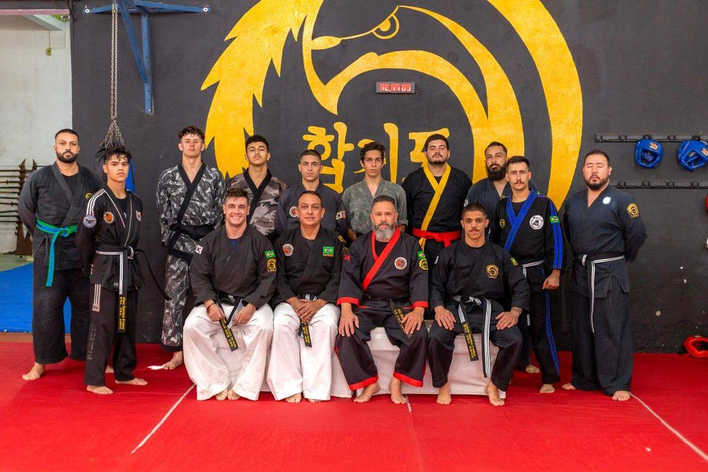

Antes de ensinar defesa pessoal, o Hapkido ensina disciplina. Cada faixa carrega responsabilidade — o primeiro passo de uma jornada que acompanha a vida inteira dentro da arte.
Para as crianças do Instituto, a prática esportiva é também formação: disciplina, organização, respeito e compreensão da hierarquia — valores que atravessam o tatame e chegam à vida fora dele.
Desde muito cedo, os pequenos do IBH aprendem que o dobok e a faixa carregam responsabilidade — o primeiro passo de uma jornada que, para muitos, começa na infância e acompanha a vida inteira dentro da arte.







Mais que técnicas de imobilização, o aluno aprende a controlar o impulso e agir com serenidade sob pressão — segurança que vem do domínio de si, não da agressividade.

Formas, filosofia e etiqueta do Hapkido coreano moldam respeito à hierarquia e senso de continuidade — valores que atravessam gerações dentro e fora do tatame.

Nos primeiros passos, a criança aprende disciplina, paciência e trabalho em equipe — a base de convivência que carrega para a escola, a família e a vida adulta.

A preparação para campeonatos ensina resiliência diante da derrota e humildade na vitória — o espírito esportivo que forma atletas e cidadãos.

Kyosanim e sabonim aprendem a liderar pelo exemplo — responsabilidade, escuta e compromisso com quem vem depois, formando não só faixas-pretas, mas referências.